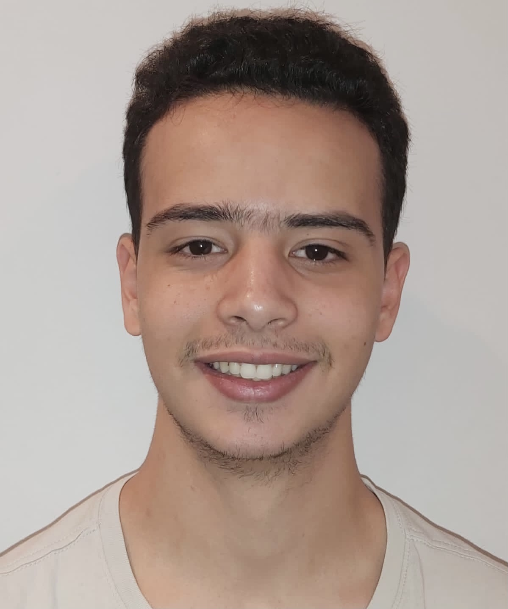

Bonjour, je suis Jawad!

- Toujours désireux d'apprendre, d'assumer plus de responsabilités et
de grandir sur le plan professionnel, je vous présente mon C.V!
Formations
- Ecole de management Leonard de Vinci ,La défense,Courbevoie
(En cours).
Etudiant en première année d'école de commerce (deuxième du
classement L'étudiant) délivrant un master au bout de cinq années
d'études.
- Formation Sotf Skills à l'organisation de l'équipe du travail et aux
méthodes de travail collectif. La défense, Courbevoie
Octobre 2020
- Baccalauréat scientique mention bien,
Lycée Guillaume Apollinaire de Thiais, 94320.
Juillet 2020
Compétences
- Esprit d'équipe
- Résolution de problèmes
- Sens de l'écoute
- Excellent sens du relationnel
- Sens de l'effort
Contactez-moi!
- E-mail:
jawad.abdellaoui@edu.devinci.fr
- Adresse :
13 rue edmond rostand, Orly 94310
-
Téléphone:
0763858535
Langues
- Français
- Anglais : Niveau B1, suivi d'un cours sur la préparation au pasage du TOEFL.
Sports
- Les sports d'équipes ( comme le basket-ball et le volley-ball)
m'ont permis d'améliorer mon esprit d'équipe!
- Le karaté ( que j'ai pratiqué durant plusieurs années jusqu'à la
ceinture bleue) m'a donné quant à lui ma combativité et le sens
du dépassement de soi!